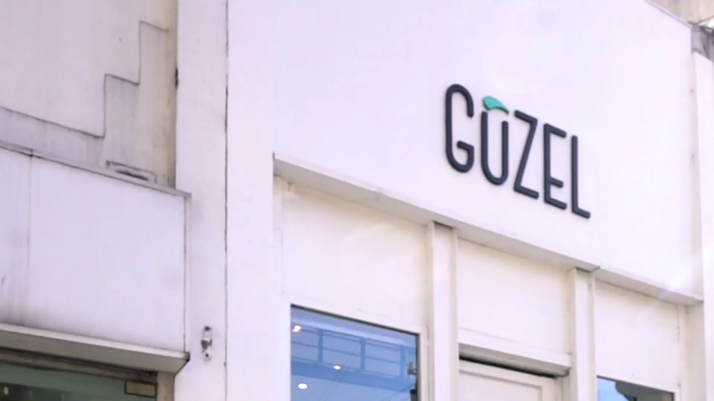
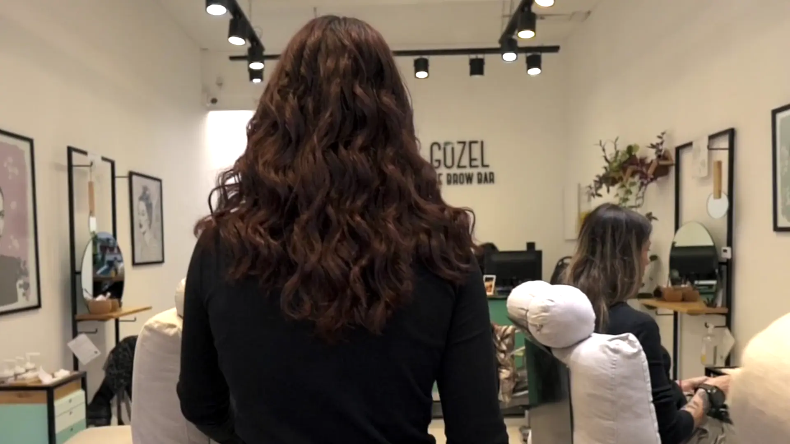
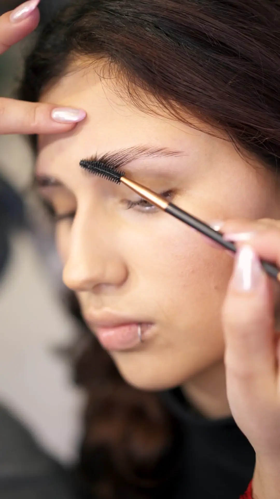
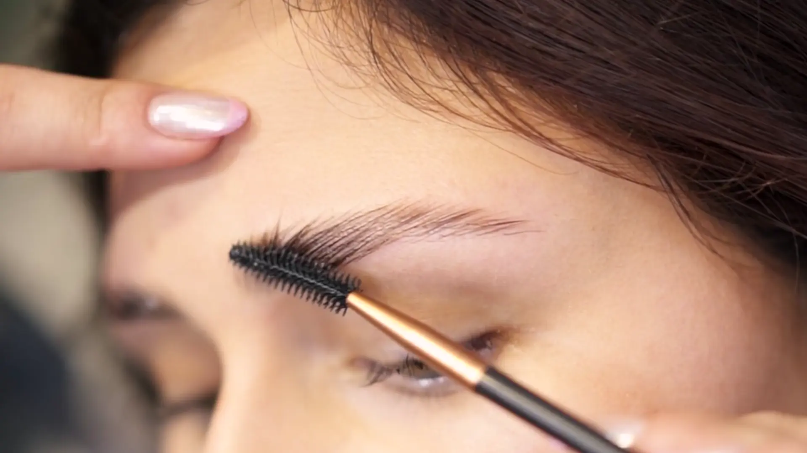
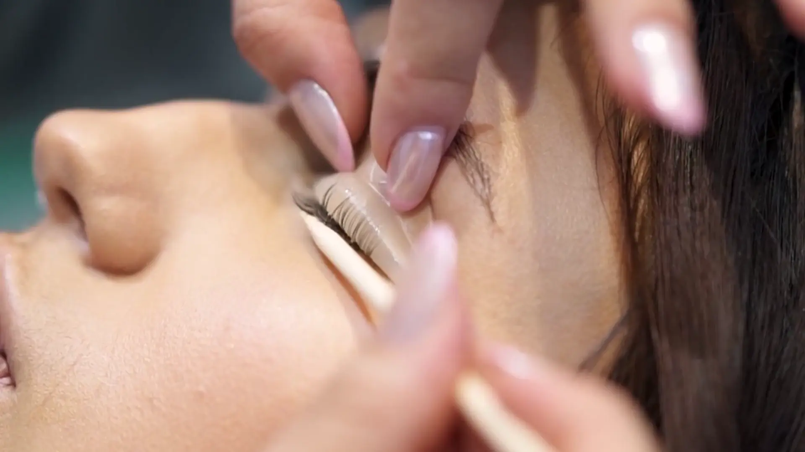
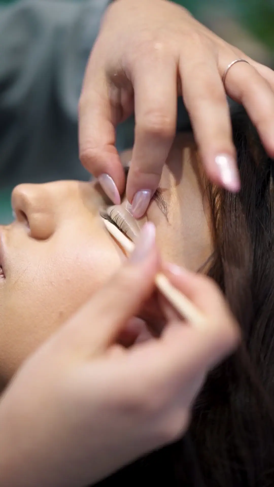
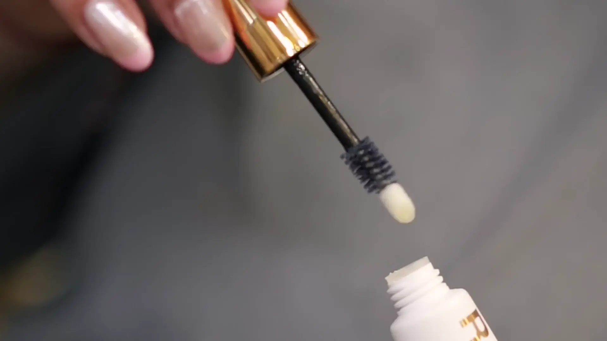
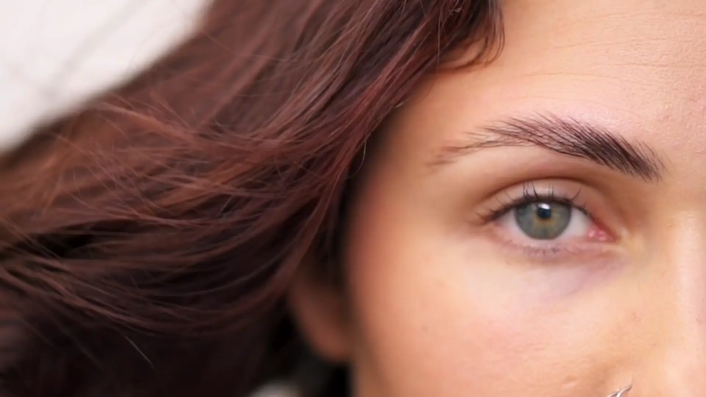

Así se ve hoyEntrada
- Qué filmar
- Una clienta entrando al local, con la fachada y el logo a la vista.
- Para qué
- Es la primera escena: la web se abre por la ceja del logo y aparece esto.

Qué tomas necesitamos, cómo filmarlas y por qué. Para que la web se vea como se ve Guzel en el local.
Cómo usa la web los videos
Se entra por la ceja del logo y cada escena aparece al deslizar. El video ocupa toda la pantalla y los textos de la web van encima. Por eso el video es lo primero que se ve y lo que más pesa en la impresión.
Las mismas tomas se usan en más páginas: cada servicio, Quiénes somos y la portada de Home Care. Una buena toma rinde en varios lugares.
Por qué hacen falta tomas nuevas
La web de prueba está armada con un reel pensado para Instagram. En celular funciona. En compu, donde la pantalla es horizontal, solo entra una franja de la imagen.


Cómo filmar
Las dos filmadas, no una recortada de la otra. Por qué: compu y celular tienen cada uno su encuadre, y así ninguno pierde imagen.
Por qué: la web pasa los videos en cámara lenta. Con esos cuadros la cámara lenta es real y se ve suave.
Sin cortes adentro. Por qué: de cada toma elijo el mejor tramo y lo dejo en loop, sin saltos.
Trípode o estabilizador. Por qué: un movimiento brusco, repetido en loop y en cámara lenta, marea.
Por qué: la web pone sus propios títulos y botones encima, y cualquier letra del video queda cortada o tapada.
Sin cara ni acción en esa zona. Por qué: ahí va el texto de la web. Más abajo está el dibujo de dónde cae.
Por qué: lo que vende es ver el hilo, la pinza o el producto trabajando. Una cara posando no muestra el servicio.
Por qué: el parpadeo de tubos o pantallas casi no se ve a velocidad normal, pero en cámara lenta se nota mucho.
El encuadre
En compu el texto va a un costado. En celular va abajo. La acción tiene que quedar en el resto del cuadro.

AcciónTexto de la web
AcciónTexto de la webLas tomas
Las seis primeras son las escenas de la home. La imagen muestra cómo se ve hoy cada una. Las dos últimas son nuevas.

Así se ve hoy
Así se ve hoy
Así se ve hoyEn resumen